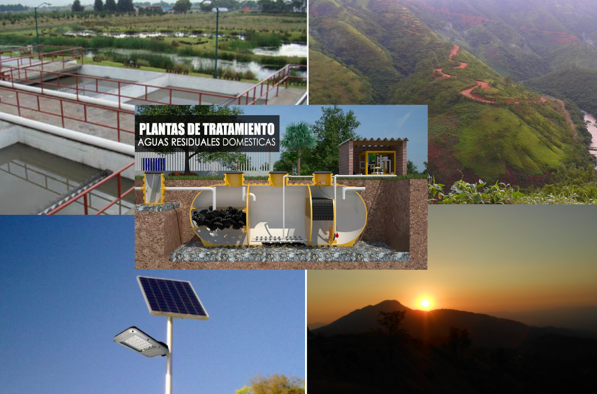

Comunidades limpias.
Lograr que las ciudades y los asentamientos humanos sean inclusivos, seguros, resilientes y sostenibles: reducir el impacto ambiental negativo per cápita de las ciudades, incluso prestando especial atención a la gestión de los desechos municipales y de otro tipo, dicta el numeral 11 de los Objetivos para el Desarrollo Sostenible.
No obstante, en el mundo, cada día morían 17 mil niños menos que en 1990, pero más de 6 millones seguían muriendo antes de cumplir los 5 años. En México, 1 de cada 5 personas no tenía acceso a servicios de salud (16.9%. CONEVAL, 2015) y 3 de cada 5 personas no tenían acceso a seguridad social (56.6%. CONEVAL, 2015).
La resiliencia demanda del conocimiento y apropiación de los medios de producción, así como de la gestión de todos los residuos que de esta se generen.

En dicho caso, IMDRIS A.C. incide a través de la investigación, gestión, puesta en marcha y acompañamiento en proyectos orientados a:
- Propiciar y difundir los medios para la sensibilización respecto a los residuos familiares y comunitario.
- Desarrollar localmente esquemas de tratamiento de residuos locales.
- Sensibilizar respecto a los hábitos de consumo.
- Promover y detonar esquemas de separación y reúso de materiales.
- Propiciar la vinculación con instituciones dedicadas a la promoción de ciudades limpia.
- Desarrollar redes de difusión del conocimiento respecto al manejo de los residuos.
- Inclusión y equidad en el manejo de residuos locales.
- Residuos domésticos y municipales como fuente de energía.
- Participación ciudadana en la gestión de residuos locales.
- Participación ciudadana en la gestión energética.
- Fomento de redes de conocimiento para gestión de residuos.